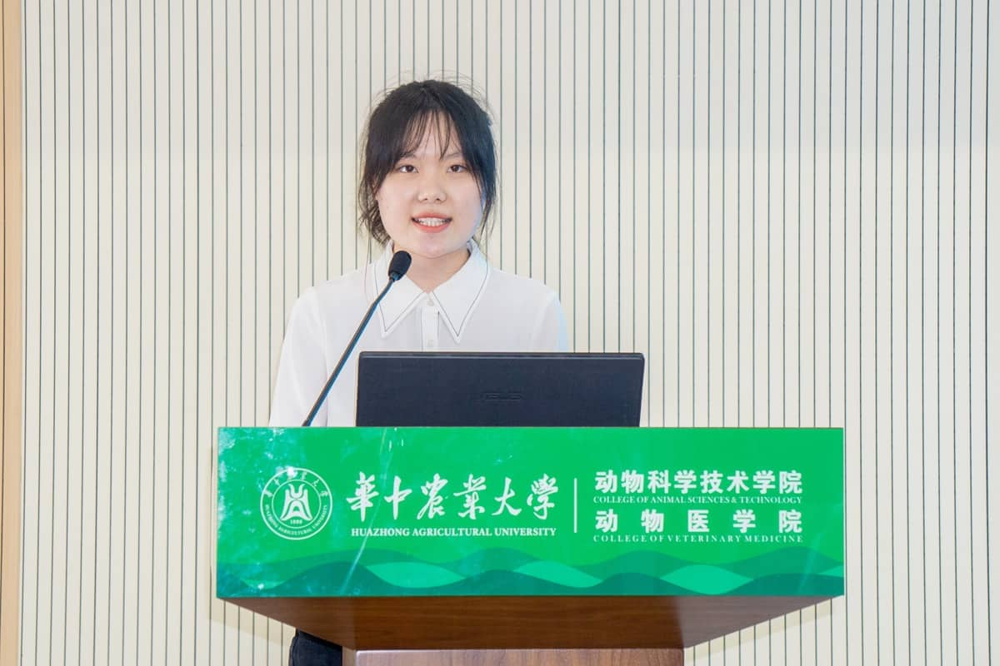
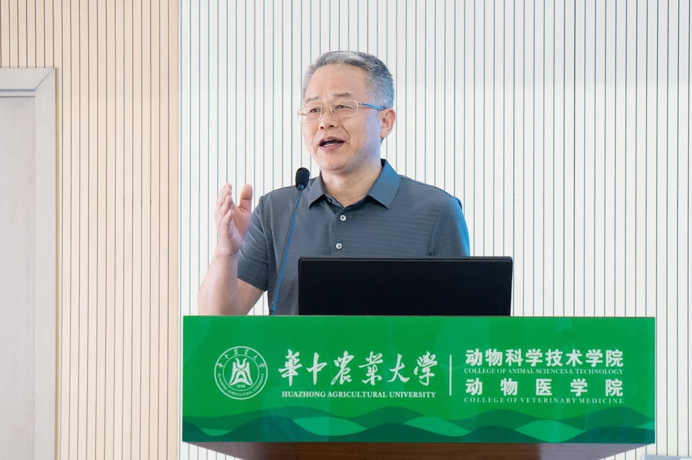
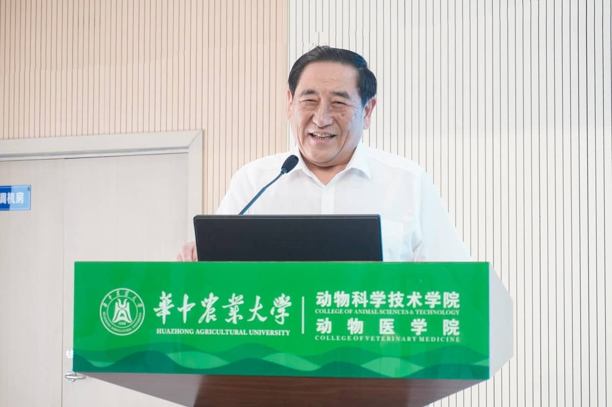

The 6th "Huanchun Fund" Award for Teaching Scholarship, the Awarding Ceremony of the Enterprise Scholarship of the School of Biomedical Sciences and the 21st Entrepreneur Forum were held
Nanhu News Network News (correspondent Du Zhihang, Wang Bihan and Wang Yujun) On the afternoon of June 12, the 6th "Huanchun Fund" Teaching Scholarship and 2023 Animal Science and Technology College Enterprise Scholarship Awards Conference was held in the F101 lecture hall of the fourth complex building. Chen Huanchun, an academician of the Chinese Academy of Engineering, and Liao Jizhong, deputy secretary of the school's party committee and secretary of the Disciplinary Committee, attended the awards ceremony and delivered speeches. More than 400 people from the "Huanchun Fund" award and scholarship support unit, the enterprise scholarship donation unit of the School of Animal Medicine, the heads of relevant units of the school, and the representatives of teachers and students of the School of Animal Medicine attended the meeting.

Conference site (photographed by correspondent Feng Wenhong)
Liu Xingbin, Secretary of the Party Committee of the School of Animal Medicine, presided over the meeting. He said that for a long time, under the guidance of academician Chen Huanchun's "three creations" spirit, the college has aimed to cultivate leading talents in the animal husbandry and veterinary industry, and has steadily promoted the construction of first-class disciplines facing the world's cutting-edge science and technology and the country's major needs. Academician Chen Huanchun established the "Huanchun Fund" teaching scholarship six years ago, and led the establishment of the Animal Diseases academic journal, aiming to further deepen talent training and encourage technological innovation. With the support of cooperative enterprises, the School of Animal Science and Technology has set up enterprise scholarships to encourage students to develop in an all-round way and grow into a new type of pastoral medicine talents with excellent comprehensive quality.

Award-winning student representative Ma Ke made a speech (photographed by correspondent Sun Zhe)
After the staff read out the commendation decision, the guests presented awards to the winning teachers and
students. Ma Ke, the representative of the award-winning student, told the story of his growth and
transformation during the three years of enrollment.
Professor Zhao Shuhong, Dean of the School of Animal Sciences, issued a letter of appointment to the head
teacher of the class of 2022 undergraduate students. Ms. Wang Dan, general manager of Hebei Weierli Animal
Pharmaceutical Group and head teacher representative of 2022 undergraduates, gave a speech on the theme of
"walking at the forefront of development and pursuing the power of life". She said that the company will
actively cooperate with the school to jointly educate students, convey the development trends of the industry
to the students, and provide students with a better practical internship platform.

Liao Jizhong's speech (photographed by correspondent Sun Zhe)
In his speech, Liao Jizhong pointed out that it is the responsibility and the honor of the teacher to cultivate the talents of the world based on building morality and cultivating people, and to strengthen agriculture and promote agriculture. The "Xuetang Road", "Xueyuan Road" and "Xuefu Road" of Huazhong Agricultural University are the roads of history, reality, and ideals. They have already embarked on a wider and wider "Lion Mountain Avenue". After more than 120 years of development and accumulation, the word "nong" of Huazhong Agricultural University has become better and better. It has been written on the land of the motherland, on the fields of hope, and on the generations of Huanong people. on the heart. Liao Jizhong emphasized that innovation, creation, and entrepreneurship, "One creation leads to a way out; another creation is the right way; another creation wins the future." He encouraged students to practice the "Three Creation Classics" and do a good job in the "Three Creation Deeds". Occupy the high ground of three innovations and contribute to the achievements of three innovations.

Academician Chen Huanchun's speech (photographed by correspondent Yu Siyi)
Academician Chen Huanchun said in his speech that the key to international competition and China's development today is scientific and technological innovation, and the key to scientific and technological innovation lies in talents. In the face of major changes unseen in a century, we must develop the cause of the great rejuvenation of the Chinese nation, as well as the development of all mankind and the world. This is the mentality and goal we should have to seize opportunities and meet challenges. He emphasized that products are the key to building a country with talents, strengthening it with technology, and rejuvenating it with industry. There is no distinction between basic research and applied research in the minds of real scientists. He sent a message to the students to work hard: "The world belongs to young people. Young students should open their horizons and stand higher. They must see the new trend and new future of the country's development and rejuvenation. Students have caught up with the good times and shoulder the responsibility. To carry out the historical mission of the rejuvenation of the Chinese nation, you must study hard and give full play to and contribute your ingenuity." At the ensuing 21st Entrepreneur Forum of Dongfang Medical College, Academician Chen Huanchun and Professor Zhao Shuhong of our school, Huang Dapeng, Deputy Secretary of the Party Committee of Guilin Liyuan Grain, Oil and Foodstuff Group Co., Ltd., and Yang Yang, Executive Vice President of Wuhan Huayang Animal Health Group Co., Ltd. Jian made reports one after another. "The export of science and technology is the product, and the product leads the development." Academician Chen Huanchun centered on the theme of "focusing on the major needs of the country to do a good job in scientific research". The three major problems of prominent food safety and serious environmental pollution make it clear that to improve agricultural production efficiency in the future, we must adhere to scientific and technological innovations in the agricultural biological seed industry, technological innovations in feed and fertilizer resources, technological innovations in the prevention and control of animal and plant diseases, insects, and weeds. Machinery and smart agriculture, food processing technology innovation, environmental restoration and ecological protection six scientific research innovation directions. Professor Zhao Shuhong gave a report titled "Innovation and Development of Animal Breeding Science and Technology". She emphasized that the revitalization of the seed industry is a national strategy, and the safety of seed sources is related to national security. It is necessary to promote the national seed industry to realize the self-reliance and self-reliance of seed industry technology, and the self-control of seed sources. At present, the international seed industry is ushering in the technological revolution of modern biological breeding marked by the integration and development of gene editing, synthetic biology, artificial intelligence and other technologies. The competitiveness of the main enterprises is not strong. We must seize the opportunity, accelerate innovation, and solidly promote the national breeding joint research and livestock and poultry genetic improvement plan through the implementation of major biological breeding projects, so as to make a turnaround in the seed industry and realize the leapfrog development of the seed industry. Huang Dapeng talked about choices and growth with his classmates based on three stories of young farmers and herdsmen. He quoted Marx's classic quotations to encourage students: "If we choose the profession that can work best for mankind, then the burden cannot overwhelm us, because it is a sacrifice for everyone; what we enjoy then will not be Poor, finite, selfish pleasures, our happiness will belong to millions, our cause will live on silently, but it will work forever, and over our ashes noble people will sprinkle Tears." Yang Jian conveyed the idea that "experience is sometimes more important than academic qualifications" through personal experience, and encouraged students to practice by themselves, find real problems in practice, and really solve problems.
Reviewer: Dai Jingui
Release time: 2023-06-13 Author: Views: 389